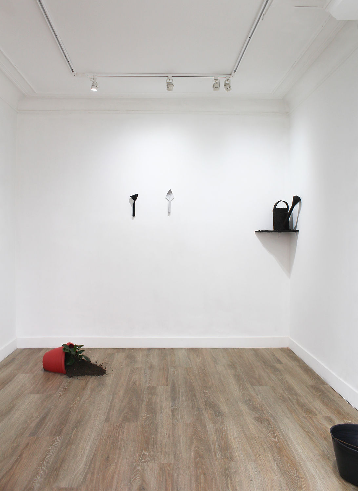
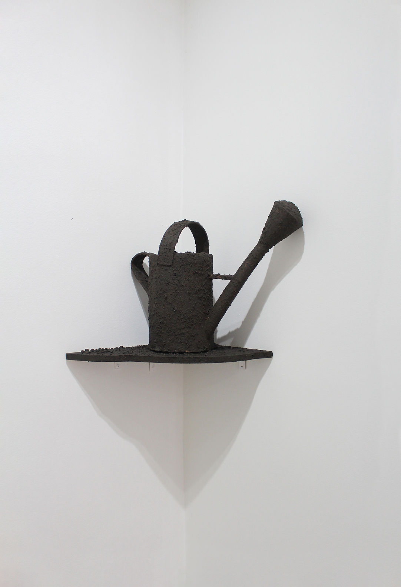
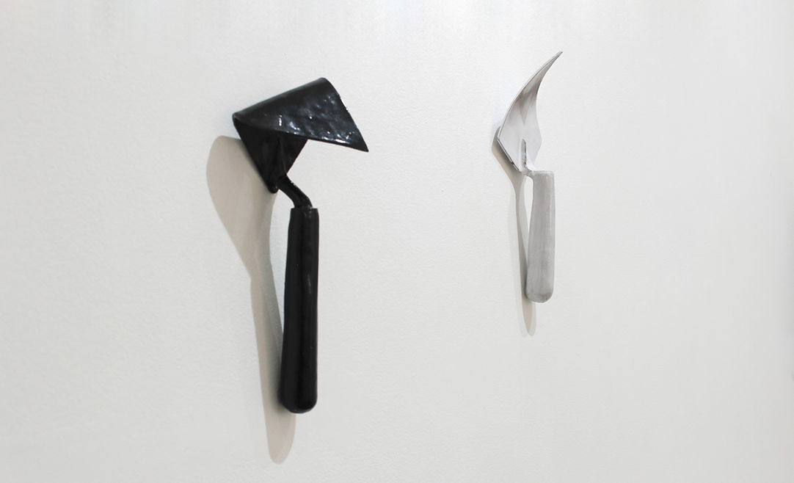
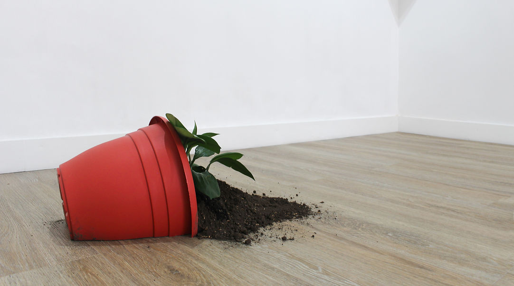
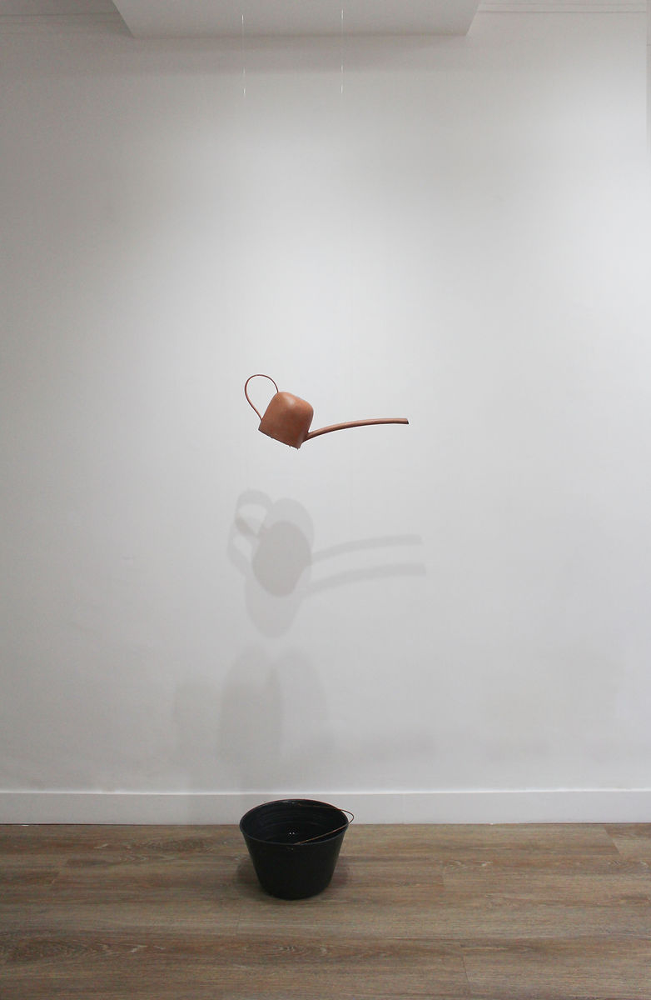
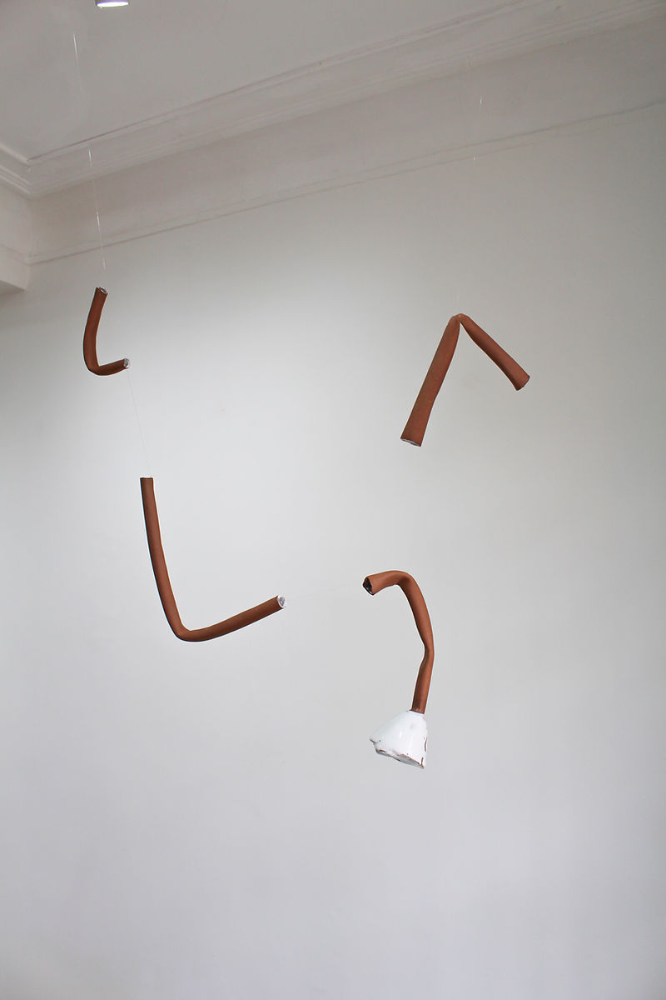
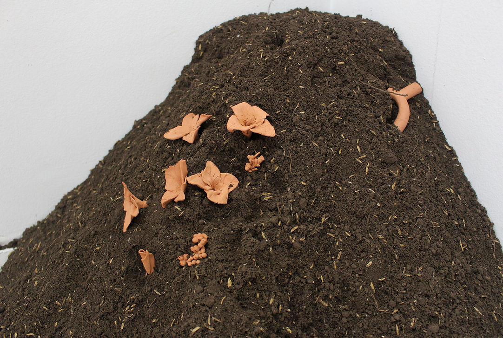

Antejardín
7 June - 15 July 2025
FLOTANTE - Bogotá.
Fountains are devices that have traditionally played an ornamental role, especially in garden settings. The antejardín —that strip of ground between the street and the house— thus becomes an ambiguous stage: not entirely public, not entirely private. I was drawn to its liminal character, its condition as a threshold, and I wanted to consider what happens when the usual order of the objects that inhabit it is disturbed.
Antejardín explores the functionality —or the lack of it— of the elements that tend to populate this space: tools, containers, shovels, soil, watering cans and fountains. Rather than reproduce their form or their use, I set out to operate on them, to throw them out of true, to let their fragility show through.
Recreating an antejardín therefore became a question about the order of things: a watering can covered in soil, a pair of bent shovels, a fallen planter, a mound of earth with ceramic flowers jutting out, a broken pipe suspended in the air. These ceramic artefacts —watering cans without holes, containers that leak, unfinished fountains— do not seek to resolve a function, but to become questions about it.
These formal and symbolic alterations point to the fragility of the structures that organise the domestic, the decorative, the useful. As in a fountain, water does not always follow the course laid out for it: sometimes it strays, pools, or disappears.

General view.

Watering can. Ceramic, soil.

Ceramic. Tools. 40 x 25 cm.

Installation. Plastic planter, plants, soil. 50 x 40 x 25 cm.

Installation. Ceramic watering can, plastic base, water. 170 x 20 x 30 cm.

Installation. Ceramic. 80 x 40 x 10 cm.

Installation. Ceramic, soil. 80 x 40 x 30 cm.